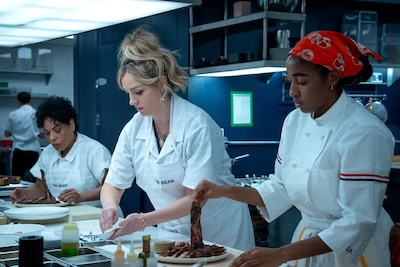

About The Bear
DONNA I’m spillin’ shit everywhere. And I’m behind on the lobster. Carm, is Cousin Sarah’s friend Pedro gay? Donna moves fast, manic-make-you-nervous-fast. Way too much for one person and she’s sweating. You can smell the onions and garlic and whitefish. CARMY Is who gay? Mom you don’t have to make all seven fishes, no one eats this shit-- DONNA Pedro. He seems gay like arty you know. Effeminate. I love him, I’m just saying he seems gay and it’s tradition-- CARMY It’s tradition that Pedro’s gay? THE BEAR #206 Network Draft - 11/14/22 5. THE BEAR #206 Network Draft - 11/14/22 6. DONNA Carmen. No. The seven fishes are tradition, baby. Why do you think I’ve been doing this since 4am-- CARMY Okay well what can I do-- DONNA You can fix the forks please. CARMY K-- you sure you want to use these nice ones? DONNA Yes, baby, for the seven fishes-- CARMY Ma, we can be casual-- DONNA Honey just do it don’t make me ask you five times-- FAK enters with older brother TED FAK (35)-- DONNA (CONT’D) Faks out, delicate operation-- Carm starts wrapping forks with knives & napkins--
CICERO And now it’s later. Got it. Shoot. RICHIE (deep breath) I’m gonna have this kid, I can’t be, you know, wrapping up sandwiches forever. I know you do a lot of different things and you probably could use some help. I could be good. Mike too. I’ve been looking. There’s not like a lot out there. You’re somebody that knows some things. We both don’t wanna be in The Beef everyday, you know, I mean that makes sense right? Feel like I’m wasting potential. CICERO What kind of potential? RICHIE I dunno, potential to do something. I feel like I’m really good with people but like I don’t what the outlet is you know? And like I never had like... an uncle or mentor-- CICERO I am neither of those things. RICHIE But you know what I’m saying. CICERO I do not. RICHIE I’m saying like you could teach me you know? I could learn from you and you could teach me stuff. CICERO You want me to teach you stuff? RICHIE Like in business-- CICERO You want a job. I get it. RICHIE Think about it? THE BEAR #206 Network Draft - 11/14/22 17. THE BEAR #206 Network Draft - 11/14/22 18. CICERO (pats his shoulder) I will think about it. Cicero turns toward the kitchen... SUGAR (O.S.) Ma. Can I help? DONNA (O.S.) (laughs) I think we’re good, Angel. I don’t want to have tell everybody why I call you Sugar again. I’m joking sweetie I love you-- Cicero enters kitchen. Sugar annoyed. Sick of this story-- SUGAR Everybody knows why. CICERO I don’t know why. Donna impressively pulls bright red lobsters from a pot. Sugar moves two WINE BOTTLES, looks to Carm--